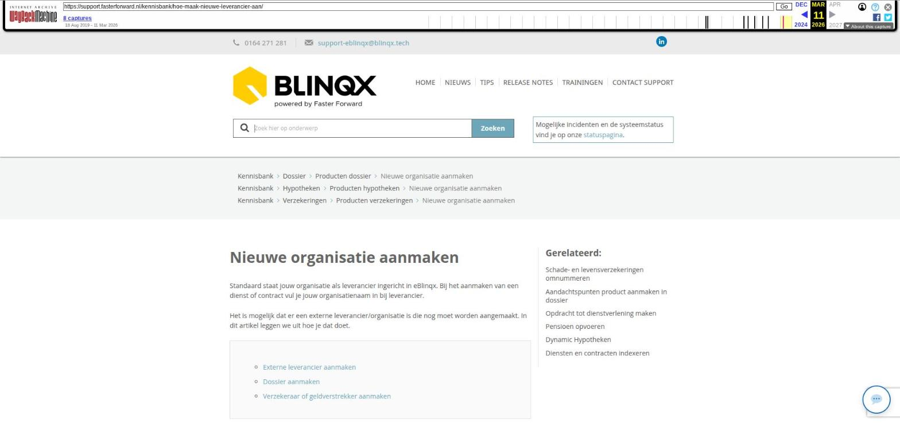

Nieuwe organisatie aanmaken

Tekstinhoud
Nieuwe organisatie aanmaken
Standaard staat jouw organisatie als leverancier ingericht in eBlinqx. Bij het aanmaken van een dienst of contract vul je jouw organisatienaam in bij leverancier.
Het is mogelijk dat er een externe leverancier/organisatie is die nog moet worden aangemaakt. In dit artikel leggen we uit hoe je dat doet.
Externe leverancier aanmaken
Dossier aanmaken
Verzekeraar of geldverstrekker aanmaken
Externe leverancier aanmaken
Allereerst dient er een organisatie aangemaakt te worden. Ga hiervoor naar Beheer > Organisatie & Personen. Controleer of de organisatie niet reeds opgevoerd is door de naam in te geven en op zoeken te klikken.
Klik links bovenin op het plussymbool om een nieuwe organisatie aan te maken. Vul minimaal de naam van de organisatie in het groene veld om de pop-up op te kunnen slaan.
Na het opslaan springt de pagina naar de organisatie, waar meerdere tabbladen beschikbaar zijn om aanvullende informatie in op te slaan.
Open het tabblad 'Detail' en vink hier 'Leverancier' en 'Maatschappij' aan. Als het een verzekeraar betreft vink je ook 'Verzekeraar' aan.
Onderaan deze pagina kun je eventueel een subadministratie aanvinken.
Na het aanvinken en opslaan van de subadministratie verschijnt het tabblad 'Financieel'.
Daar kun je de financiële gegevens invullen die aan de leverancier worden gekoppeld.
Dossier aanmaken
Wanneer je via Organisatie & Personen een nieuwe maatschappij/leverancier aanmaakt dan is hier nog niet automatisch een dossier van. Als je deze leverancier opzoekt via het dashboard dan komt deze dus niet naar voren, omdat er dan alleen in dossiers gezocht wordt.
Je zal een dossier voor deze leverancier moeten aanmaken. Hier lees je hoe je een dossier kunt aanmaken.
Verzekeraar of geldverstrekker aanmaken
Voor het verder aanvullen van de maatschappij verschilt het of je te maken hebt met een verzekeringsmaatschappij of een geldverstrekker voor hypotheken.
Hier lees je wat nog meer ingericht moet worden bij een verzekeringsmaatschappij (en ADN).
Hier lees je meer over verder inrichten van een maatschappij in combinatie met het hypotheekproces.
Laatste update: 15 oktober 2025
Was deze informatie nuttig?
Ja Nee
[Opmerking archivering: dit artikel staat onder drie kennisbankcategorieën: Dossier > Producten dossier, Hypotheken > Producten hypotheken, en Verzekeringen > Producten verzekeringen.]